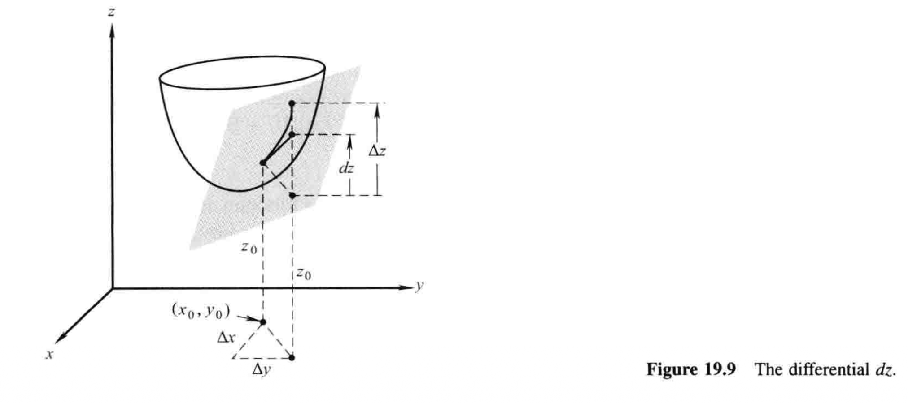

19.4 增量和微分 基本引理¶
微积分的大部分内容可以通过几何直觉再加上一点点常识来理解，不需要拘泥于某个主题的基础理论. 不过在一些地方，这种理论还是逃不开的，因为如果没有了它，就无法弄清这个主题首要问题到底是什么. 这对于无穷级数和收敛理论是适用的，对于接下来两节的话题——方向导数和链式法则，也是适用的. 如果对我们接下来讨论的基本问题缺乏一定程度的重视，那么理解就无从谈起.
为了引入这些问题，我们从考虑一个在点\(x_0\)处可导的单变量函数\(y=f(x)\)开始. 设有增量\(\Delta x\)使得点\(x_0\)变化至点\(x_0+\Delta x\)，我们感兴趣的是相应的\(y\)的增量
导数\(f'(x_0)\)的定义是
还可以写成等价形式
其中\(\Delta x \to 0\)时\(\epsilon \to 0\). 此时，除了假定导数\((1)\)存在以外，无需任何其他假设，就可以写出\(\Delta y\)为如下形式1：
其中\(\Delta x \to 0\)时\(\epsilon \to 0\).
接下来我们解释，对于两个及以上变量的函数，情况则大相径庭.
考虑函数\(z=f(x,y)\)，设\((x_0,y_0)\)是使得偏导数\(f_x(x_0,y_0)\)和\(f_y(x_0,y_0)\)都存在的一点. 如图19.9，由点\((x_0,y_0)\)移动到点\((x_0+\Delta x,y_0+\Delta y)\)时\(z\)的增量就是

为了发展我们在19.5和19.6节中将会用到的工具，像\((2)\)那样表示\(\Delta z\)是很有必要的：
其中当\(\Delta x\)和\(\Delta y \to 0\)时，\(\epsilon_1\)和\(\epsilon_2 \to 0\). 遗憾的是，与单变量的情形形成鲜明对比，仅凭偏导数\(f_x\)和\(f_y\)在\((x_0,y_0)\)处存在，并不足以保证\((3)\)的正确性. 这个结论2的充分条件是：
基本引理
设函数\(z=f(x,y)\)及其偏导数\(f_x\)和\(f_y\)在点\((x_0,y_0)\)处及其某邻域内有定义，进一步设\(f_x\)和\(f_y\)在\((x_0,y_0)\)处连续，则增量\(\Delta z\)可以用\((3)\)的形式表示，其中当\(\Delta x\)和\(\Delta y \to 0\)时，\(\epsilon_1\)和\(\epsilon_2 \to 0\).
这个陈述之所以称为引理，通常是因为它的重要性并不在于自身，而在于别处的功用. 附录A.19中给出了一个证明.
我们不倾向于在此过多逗留，只简短讲几个注记.
注记1 在单变量函数的情形中，\((1)\)和\((2)\)是等价的，若任意一个满足，习惯上就把\(\Delta x\)写成\(dx\)，\(\Delta y\)写成\(dy\)，于是\(dy\)就是沿切线\(y\)的变化. 而对于函数\(z=f(x,y)\)，若\(f_x(x_0,y_0)\)和\(f_y(x_0,y_0)\)都存在，并且引理也成立，那么才能称函数是可微的——可见仅偏导数存在仍是不够的3. 这种情况下——并且仅在这种情况下！——我们把\(\Delta x\)和\(\Delta y\)写成\(dx\)和\(dy\)，并定义微分\(dz\)为4
此种情形下，可以证明曲面\(z=f(x,y)\)在点\((x_0,y_0,z_0)\)处有一个切平面，而\(dz\)就是\(z\)沿着该平面的变化，如图19.9所示. 微分\(dz\)也常写成以下等价形式：
或
注记2 函数\(z=f(x,y)\)在某一点可微，自然就在这一点连续. 这从\((3)\)立即可得，因为\(\Delta x\)和\(\Delta y \to 0\)时，\(\Delta z \to 0\). 在单变量的情形下，我们知道函数如果在一点可导，那它在这一点必然连续. 然而，这对于多变量函数则未必成立：仅仅是偏导数\(f_x\)和\(f_y\)在一点的存在，并不意味着\(f(x,y)\)在该点连续. 这已经通过19.1节中那个怪异的函数为例展示过了，其中\(f_x(0,0)=f_y(0,0)=0\)，但函数在\((0,0)\)并不连续.
可微函数及其微分的概念，以及基本引理，可以通过很明显的方式拓展到任意的变量数有限的函数. 只不过可能会写得比较长，但思想并不新鲜，所以我们还是不要给读者增加这种负担了.